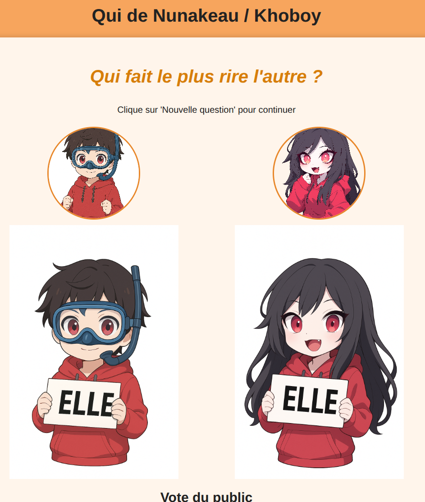

git commit -m "refactor(thomas): change class formulator -> developer"
git commit -m "refactor(thomas): change class formulator -> developer"
Afin d'animer son subathon, Nunakeau avait demandé à ses modérateurs de créer des petits jeux streamables.
Le jeu lui/elle est un jeu classique des animations de mariage ou d'evenement. Le but consiste à poser des questions à deux personnes se connaissant bien (souvent des amoureux) pour voir s'ils se connaissent aussi bien qu'ils le pensent. Par exemple: "Qui de vous deux se perd le plus facilement ?"
Ce genre d'activité est généralement amené par un présentateur. Cependant avec le planning chargé, il était difficile qu'un modérateur puisse se rendre disponible. Thomas a donc créé une page web permettant alors à Nunakeau de pouvoir faire l'activité sans avoir besoin d'un présentateur. Rapidement, le fait d'ajouter une possibilité au tchat de voter (interactivité tres positive sur twitch) s'est imposé et cette fonctionnalité a été implémenté.
Le but était de n'avoir qu'une page web sans back pour faciliter son utilisation par la streameuse. Il suffit d'ouvrir la page index.HTML pour pouvoir utiliser le mini jeu. Le site fonctionne en tour par tour sur un écran partagé: - Une question est posée, - le joueur 1 (lui) répond pendant que le joueur 2 ne regarde pas. - le joueur 2 (elle) répond, la réponse du joueur 1 n'est pas visible pendant le tour 2, - le jeu présente les deux réponses via des images et calcule un score d'affinité (nb de réponse commune/nb de réponse total * 100) - les joueurs passent à la question suivante. Une fois toutes les questions posées, le jeu fournit un score total.
Ci-dessous, l'écran du jeu lors de la présentation des résultats :
Le tchat Twitch peut participer. Des que la question est visible, le site récupère l'ensemble des messages "lui" ou "elle" et présente les résultats en meme temps que les réponses des deux joueurs.
Les vieweurs écrivent dans le tchat twitch
La page web les réceptionnent et calcule les résultats des votes.

Ce projet comportait plusieurs étapes :
- Rédaction des questions en commun avec les autres modérateurs
- Dévellopement de la page sans interactivité avec les vieweurs
- Ajout de la fonction de récupération des votes du tchat.